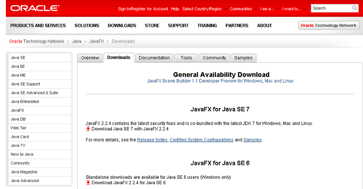
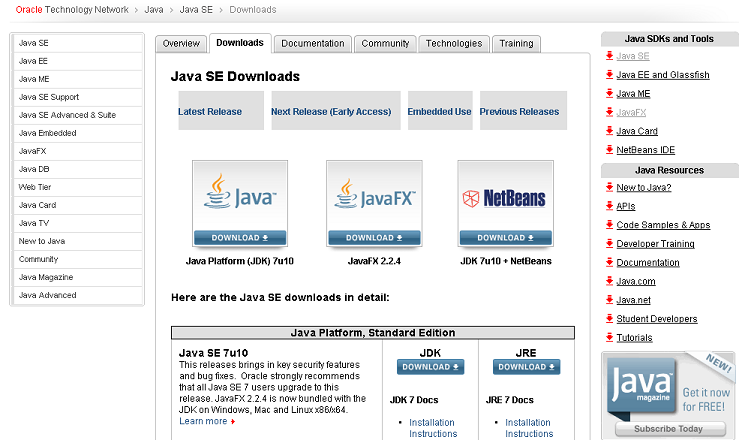
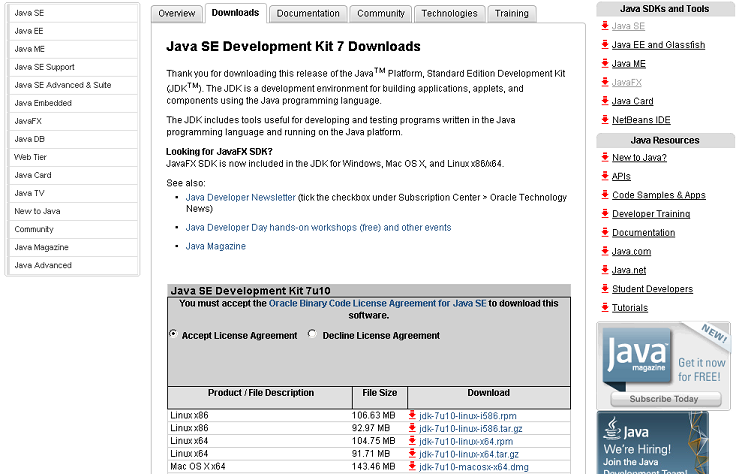
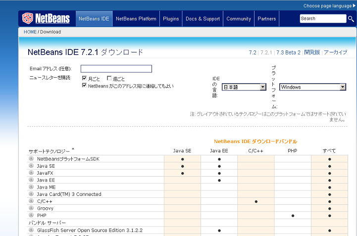
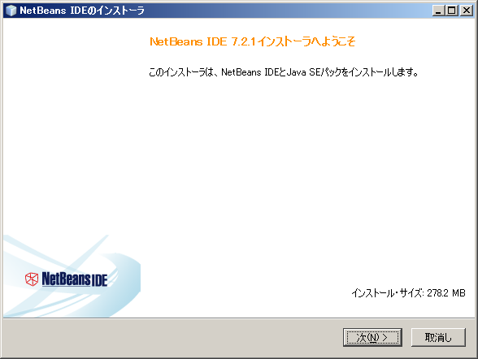
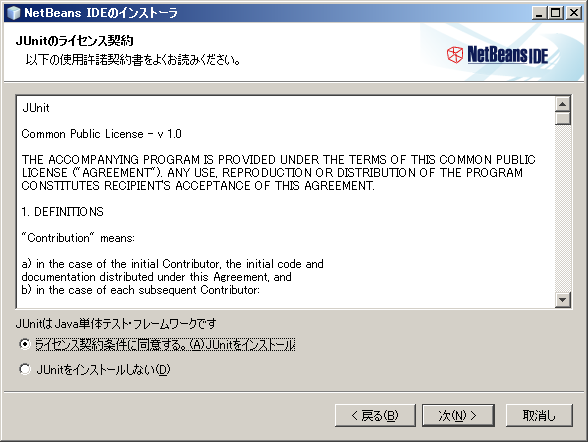
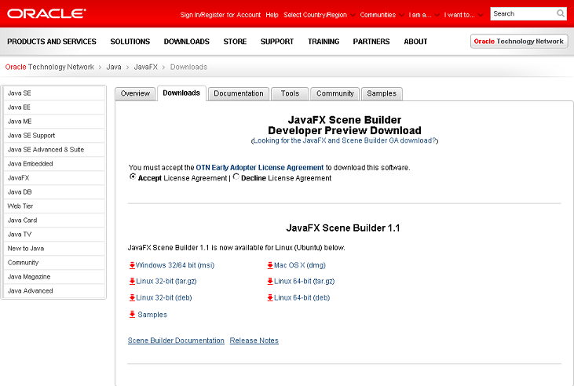

JavaFX SDKは、JavaFXを利用するためのライブラリ・ツール群です。
WindowsとMac OS X向けのJavaFX SDKは、JDK 7にバンドルされています。JDKをインストールすると、JDK本体、JRE、JavaFX SDKのインストールが行われます。 Creamyを使う場合は、JDK1.7以上のバージョンをインストールしてください。
開発用のPCに、OracleのサイトからJavaFXをダウンロードしてインストールします。
ダウンロードは こちら のページからできます。
JavaFX for Java7 SEをインストールします。
ダウンロードの前に、OTN Early Adopter License Agreementに同意する必要があります。また、インストールする際にはOracleのアカウントが必要になります。ない場合は、取得をしてからインストールします。
JavaFXのリンクをクリックします。この画面では、JavaFX2.2.4の例となっています。
Accept License Agreement をチェックします。 Windows、Mac、64bit環境など、自分の環境に合ったインストーラを選んでダウンロードします。
ダウンロードしたインストーラを実行します。インストール先の変更などをしない限り、デフォルトの設定で進めて問題ありません。
Creamyを利用して、アプリケーションを作成するには、NetBeans7.1以上が必要となります。
NetBeansは、Javaアプリケーション開発に特化したのIDE（統合開発環境）です。
Javaの開発においては、IDEとしてはEclipseが利用されることが多いですが、JavaFXの標準の開発環境としては、デフォルトでJavaFXのプラグインがインストールされているNetBeansが推奨されています。
また、JavaFX Scene Builderとのシームレスな連携も実現されているので、JavaFXの開発をする際には、NetBeansを用いるのがお勧めです。
NetBeansを使ったことがない方も、JavaFX、そしてCreamyの利用を機に、NetBeansを使ってみましょう。
使い勝手はEclipseとそれほど大きな差はなく、UIも軽快に動作します。
また、Creamyのプロジェクト新規作成やScaffoldのツールは、NetBeans上のプロジェクトを対象として動作します。
ダウンロードは こちら のページからできます。
Creamyを使う場合は、7.1以上のバージョンをインストールしてください。
自分の環境にあったプラットフォームを選択し、Java SE など、サポートテクノロジーにJavaFXが含まれるものをダウンロードします。
ダウンロードしたインストーラを実行します。
途中、JUnitのインストールの選択ダイアログが表示されます。単体テスト実行に便利なので、インストールしておきましょう。その他はデフォルトの設定でインストールして問題ありません。
JavaFX Scene Builderは、JavaFXを用いたプログラム開発をする際に、GUIデザインを支援するツールです。
NetBeansから起動することができ、シームレスに連携します。
Creamyを利用する上での必須要件ではありませんが、JavaFXを用いた開発での定番ツールなので、インストールしておきましょう。
JavaFX SDKと同様に、OracleのサイトからJavaFX Scene Builderをダウンロードします。
ダウンロードは こちら のページからできます。
Windows、Macなど、自分の環境に合ったインストーラを選んでダウンロードします。
この画面では、Developer PreviewのJavaFX Scene Builder1.1の例となっています。
